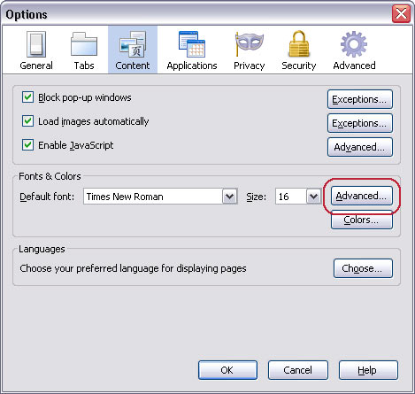
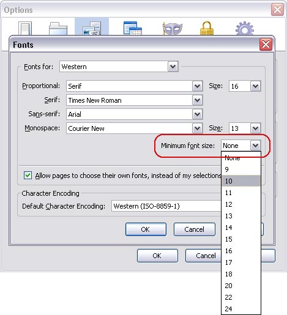
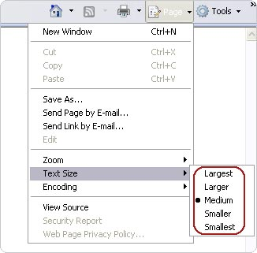
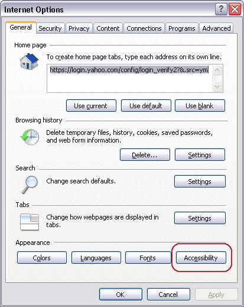
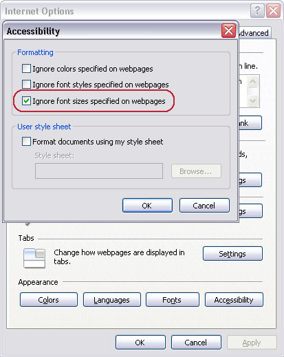

Accessibility Options in browsers
Microsoft Internet Explorer for Windows
Open your Internet Explorer Web Browser
Select 'Tools' from the menu at the top of your window.
From the options which appear, select 'Internet options...'.
Click on the 'General' tab.
Click on the button marked 'Accessibility'.
To change your font size, select the checkbox marked 'Ignore font sizes specified on Web pages'.
To remove background and font colours, select the checkbox marked 'Ignore colours specified on web pages'.
Click Ok (and again if necessary).
Select 'View' from the menu at the top of your window.
From the options which appear, select 'Text Size'.
Select your desired text size.
Making Text larger in Mozilla Firefox 1.5 and 2
Follow these steps to increase or decrease the size of the text for the web page you are viewing:
Open the 'View' menu with the mouse or by press 'Alt' and 'V' at the same time.
Select the 'Text Size' option with the mouse or by pressing 'Z'.
Increase or decrease the text size with the mouse or by using the up and down arrow keys and pressing 'Enter'.
Alternatively you can press 'Ctrl' and '+' to increase the text size, 'Ctrl' and ' - ' to decrease the text size. ' 'Ctrl' and ' 0 ' returns you to the default 'normal' size.
Follow these steps to set a minimum text size for all pages you visit:
Open the ' Tools ' menu with the mouse or press ' Alt ' + ' T '.
Click on ' Options', or press ' O ' , to open the Options dialog box.
Click the ' Content ' tab or use the arrow keys until it is highlighted (in blue).
In the Fonts & Colours box click on ' Advanced ' , or press ' Alt ' + 'D' , to open the ' Fonts ' dialog box.see Fig 1 below).

Click on ' Minimum font size ' box or press 'Alt '+ 'O ' . Use the up and down arrows to select a new font size and press ' Enter' - see Fig 2 below.
Click ' Ok ' button or press ' Enter '.
Click ' Ok ' button or tab to ' Ok ' button and press ' Enter '.

Making text larger in Internet Explorer 7
For the first time in Internet Explorer a zoom feature is included which allows you to enlarge the whole browser window.
to do this press ' Ctrl ' + ' + ' to increase the zoom and ' Ctrl ' + ' - ' to decrease the zoom.
You can also change the text size. The way to do this does depend on how the site has been built.
For many sites you only need to do the following:
Open the ' Page ' menu with the mouse or by pressing ' Alt'+'P '.
Select the ' Text Size ' option with the mouse or by pressing ' X '. See Fig 1.
Choose your preferred text size by clicking on it or by using the up and down arrow keys to select it and then press ' Enter '.

Making text larger in Internet Explorer
The text on the website should now have changed to reflect your choice.
However some websites have fixed the size of their text ('hard-coded') and as a result these websites will not show the change you have just made. If you would like to use larger text on these sites follow the following steps:
Click on the ' Tools ' menu with the mouse or press ' Alt '+' O '.
Click on ' Internet Options ' option with the mouse or press ' O ' . You should now see the ' Internet Options ' box as shown in Fig 2 below.

Click on the ' Accessibility ' button which is highlighted with a red circle in Fig 2 with the mouse or press ' Alt '+ ' E '.

In the Accessibility box click the ' Ignore font sizes specified on web page ' checkbox to add a tick or press ' Alt '+' Z ' as shown in Fig 3.
Click the ' Ok ' button to return to the Internet Options box.
Click on the ' Ok ' button, or press ' Tab ' until ' Ok ' is selected and then press ' Enter ' to return to Internet Explorer.
How to Turn On Accessibility Features in Google Chrome
Magnifying your screen
This feature will increase and decrease the size of text and images on the screen for better visibility.
Press and hold down the Ctrl key on your keyboard.
At the same time as holding the Ctrl key:
press the + key to increase the size of the text and images or
press the '-' key to decrease the size of the text and images.
Keep repeating Step 2 until you reach the desired size. You can return to the
standard size by pressing Ctrl + '0'.